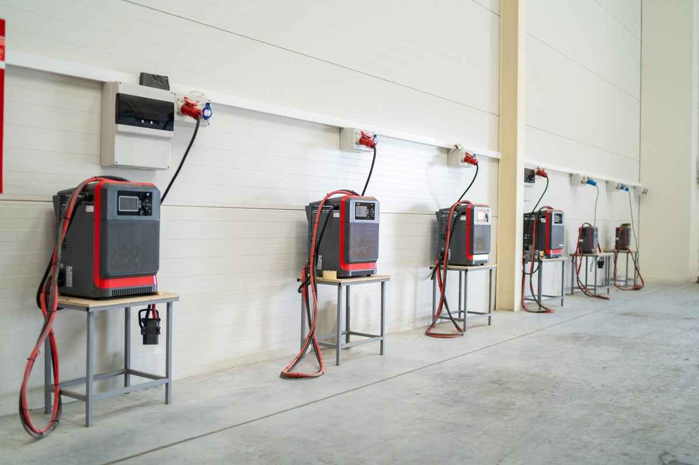

Lithium-ion batteries have been the dominant power source in consumer electronics for decades. Their move into the forklift market has been slower, held back primarily by upfront cost. But that calculus has shifted considerably in recent years. Prices have dropped, the technology has matured, and a growing number of warehouse and distribution operations are making the switch from lead-acid to lithium-ion as their electric fleets come up for replacement.
This guide covers how lithium-ion forklift batteries work, how they compare to lead-acid in practical terms, which operations benefit most from making the switch, and what the transition actually involves.

How Lithium-Ion Forklift Batteries Work
Lithium-ion batteries store and release energy through the movement of lithium ions between a cathode and an anode during charging and discharging cycles. The chemistry is fundamentally different from lead-acid, which relies on a chemical reaction between lead plates and sulfuric acid electrolyte. That chemistry difference is responsible for most of the performance characteristics that distinguish the two technologies in real-world forklift applications.
Most lithium-ion forklift batteries use lithium iron phosphate chemistry, often abbreviated as LFP or LiFePO4. LFP offers a good balance of energy density, cycle life, thermal stability, and cost compared to other lithium chemistries. It is less energy-dense than lithium nickel manganese cobalt oxide (NMC) but significantly more thermally stable, which matters for the demanding industrial environments where forklifts operate.
Every lithium-ion forklift battery includes a Battery Management System, commonly called a BMS. The BMS monitors cell voltage, temperature, and state of charge in real time and protects the battery from overcharging, over-discharging, and thermal events. The BMS is a critical component that distinguishes quality lithium-ion batteries from lower-grade alternatives, and it is one of the factors that separates reputable forklift battery manufacturers from the broader lithium-ion market.
Key Performance Characteristics
Consistent Voltage Output
One of the most practically significant differences between lithium-ion and lead-acid in a forklift application is voltage consistency across the discharge cycle. Lead-acid batteries deliver less voltage as they discharge, which means lift performance and travel speed degrade noticeably as the shift progresses and the battery depletes. A lead-acid powered forklift at 20 percent charge does not perform the same as one at 80 percent charge. Lithium-ion batteries maintain a much flatter discharge curve, delivering consistent voltage and therefore consistent performance from the beginning of a shift to the end.
Opportunity Charging
Lead-acid batteries should not be partially charged. Partial charging causes sulfation of the lead plates, which permanently reduces capacity over time. This means lead-acid batteries need to be fully discharged, then fully charged, then allowed to cool before going back into service. That cycle typically takes 16 to 24 hours including cooling time, which drives the need for battery rooms, spare batteries, and battery change procedures on multi-shift operations.
Lithium-ion batteries have no such constraint. They can be opportunity charged during breaks, between shifts, or any other time a charger is available without damaging the battery. A 30-minute charge during a lunch break meaningfully extends runtime. Operations running two or three shifts can often manage with a single battery per truck rather than maintaining a spare battery inventory, which has significant capital and operational implications.
No Watering or Equalization
Lead-acid batteries require regular maintenance including checking and replenishing electrolyte water, equalizing charges to balance cell voltages, and cleaning terminals that corrode over time. These tasks require trained personnel, protective equipment, and documented procedures under OSHA standards. Lithium-ion batteries require none of this. There is no water to check, no equalization charge needed, and minimal terminal maintenance. The BMS handles cell balancing automatically.
Thermal Performance
Lead-acid batteries are sensitive to temperature in both directions. Cold temperatures reduce available capacity significantly. High temperatures accelerate degradation and increase water loss. LFP lithium-ion batteries operate across a wider temperature range with less performance degradation, though extreme cold still affects capacity to some degree. For Charlotte area operations running equipment in non-climate-controlled warehouses through summer heat, the thermal stability advantage of LFP lithium-ion is meaningful.
Lithium-Ion vs Lead-Acid: Side by Side
| Factor | Lithium-Ion (LFP) | Lead-Acid |
|---|---|---|
| Cycle Life | 2,000 to 3,000+ cycles | 1,000 to 1,500 cycles |
| Charging Time | 1 to 2 hours full charge. Opportunity charging anytime. | 8 hours charge plus 8 hours cooling. Full cycle required. |
| Voltage Consistency | Flat discharge curve. Consistent performance shift to end. | Voltage drops as battery depletes. Performance degrades. |
| Maintenance | Minimal. No watering, no equalization, BMS handles balancing. | Regular watering, equalization charges, terminal cleaning required. |
| Weight | Approximately 30 percent lighter than equivalent lead-acid. | Heavier. Weight contributes to counterbalance on some machines. |
| Upfront Cost | 2 to 3 times higher than lead-acid. | Lower initial cost. |
| Total Cost of Ownership | Lower over the battery lifetime when maintenance and energy savings are factored. | Higher over time when replacement, maintenance, and energy costs are included. |
| Battery Room Required | No. Can charge anywhere with appropriate outlet. | Yes on multi-shift operations. Requires ventilated charging room. |
| Spare Batteries Needed | Typically no. Opportunity charging eliminates the need on most operations. | Yes on multi-shift operations. One or more spare batteries per truck. |
| Thermal Sensitivity | More stable across temperature ranges. Less performance loss in heat. | More sensitive to heat and cold. Capacity and life affected by temperature extremes. |
| Environmental Impact | No sulfuric acid. Longer life means fewer units disposed. Recyclable. | Contains sulfuric acid. More frequent replacement. Lead recycling required. |
The Total Cost of Ownership Argument
The upfront cost of lithium-ion remains the most common objection. A lithium-ion battery for a standard counterbalance forklift typically costs two to three times more than an equivalent lead-acid battery. For an operation with a large fleet, that difference is substantial.
The total cost of ownership picture looks different when you account for the full lifecycle. Lead-acid batteries on a typical forklift operation last five to seven years before needing replacement. Lithium-ion batteries in the same application commonly last ten years or longer. Over a ten-year horizon, a single lithium-ion battery replaces two lead-acid batteries plus the labor and downtime associated with those replacements.
The elimination of battery maintenance also has real dollar value. The time spent watering batteries, performing equalization charges, and managing battery rooms is labor that does not exist with lithium-ion. For operations where maintenance is performed by internal staff, that time has an opportunity cost. For operations that outsource battery service, there is a direct cost line that goes away.
Energy efficiency is a third factor. Lithium-ion batteries have a round-trip efficiency of approximately 95 to 98 percent compared to 70 to 80 percent for lead-acid. That difference shows up on the electricity bill over thousands of charging cycles.
The ROI calculation for lithium-ion is most compelling on multi-shift operations. An operation running two or three shifts with lead-acid batteries needs at least two battery sets per truck, a dedicated battery room, battery changing equipment, and trained personnel to manage the change process. Lithium-ion eliminates all of that. The capital that was tied up in spare batteries is freed, the battery room space becomes productive floor space, and the battery change procedure disappears from the shift workflow entirely.
Which Operations Benefit Most
Multi-Shift Operations
As noted above, multi-shift operations see the most dramatic operational improvement from lithium-ion. The elimination of battery changes, spare battery inventory, and battery room infrastructure represents real cost and complexity reduction that single-shift operations do not experience to the same degree.
Operations with Limited Battery Room Space
Not every warehouse has room for a proper battery charging area with the ventilation, eyewash stations, and safety infrastructure that OSHA requires for lead-acid battery charging. Lithium-ion batteries can be charged at the machine with a standard charger, eliminating the battery room requirement entirely.
Cold Storage and Temperature-Variable Environments
Operations running equipment in refrigerated or frozen environments see significant benefits from lithium-ion because cold temperatures affect lead-acid capacity much more severely than lithium-ion. A lead-acid battery in a freezer application may deliver 60 to 70 percent of its rated capacity. A lithium-ion battery in the same environment performs considerably better.
High-Throughput Distribution
Operations where forklift uptime directly affects throughput and where battery changes represent meaningful productivity loss are strong lithium-ion candidates. The ability to opportunity charge during natural breaks in the workflow keeps trucks running without planned downtime for battery management.
What the Transition Involves
Switching from lead-acid to lithium-ion is not as simple as swapping the battery. Several factors require attention before and during the transition.
Charger Compatibility
Lead-acid chargers are not compatible with lithium-ion batteries. Lithium-ion requires a charger that communicates with the battery BMS to manage the charging process correctly. Using an incompatible charger can damage the battery or create safety risks. Before purchasing lithium-ion batteries, confirm that compatible chargers are available for your specific battery and verify whether your existing electrical infrastructure can support the charger requirements.
Weight and Counterbalance
Lithium-ion batteries are significantly lighter than lead-acid batteries of equivalent voltage and capacity. On counterbalance forklifts, the battery weight contributes to the counterbalance that offsets the load at the forks. Replacing a lead-acid battery with a lighter lithium-ion battery can reduce the effective lift capacity of the machine if the weight difference is significant. Confirm with your equipment dealer or the forklift manufacturer that a lithium-ion battery of the correct weight and specifications is available for your specific machine before purchasing.
BMS Integration
Many modern forklifts can communicate with the battery BMS to display state of charge, temperature, and other data on the operator display. Older machines may not support this integration. Confirm compatibility with your equipment dealer when evaluating lithium-ion options for existing machines.
Warranty and Support
Lithium-ion forklift batteries typically carry warranties of three to five years. The warranty terms, what they cover, and who provides service locally are important factors to evaluate alongside the battery specifications. A lithium-ion battery from a manufacturer without local service support creates a practical problem when the BMS needs attention or a cell replacement is required.
Is Lithium-Ion Right for Your Operation?
Lithium-ion is not the right answer for every operation today. For a single-shift operation running standard hours with adequate battery room infrastructure and no immediate equipment replacement cycle, the financial case for switching is less compelling than for a high-throughput multi-shift facility. Lead-acid remains a cost-effective choice in those circumstances.
The inflection point is different for every operation and depends on shift structure, fleet size, existing infrastructure, energy costs, and how much the battery management overhead actually costs in real labor and downtime. The operations that have made the switch most successfully are the ones that did an honest calculation of their total lead-acid cost before comparing it to lithium-ion rather than comparing sticker prices alone.
If you are evaluating new electric forklift equipment for your Charlotte area operation, asking about lithium-ion availability and pricing from local providers is worth doing even if you are not ready to commit. The market has moved quickly and the pricing gap has narrowed enough that the comparison is worth running.
Charlotte Lift Trucks is an independent forklift matching service connecting businesses across the Charlotte metro with independent local equipment providers. Looking for electric forklift options including lithium-ion equipped models? Request a free consultation →